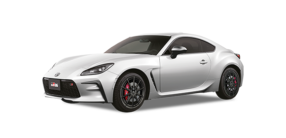

Desliza hacia abajo para descubrir más...

La respuesta del acelerador, los cambios de marcha y el tacto de embrague, conjugados con una estructura más ligera, te permitirán volver a disfrutar el manejo.
GR86 ofrece una experiencia única de conducción, con una influencia directa del recorrido de Gazoo Racing en competición. Es pura armonía entre motor y chasis.

GR86 define a la perfección el objetivo del mismo: la diversión del conductor, aprovechando todos los recursos mecánicos y electrónicos para vivir cada curva.
GR86
GR86 MT
Elegí el color
Crystal White Pearl
| Categoría | Especificación |
|---|---|
| Motor | Bóxer 4 cilindros, 2.4 litros |
| Potencia | 237 caballos de fuerza |
| Torque | 250 Nm |
| Transmisión | Manual o automática de 6 velocidades |
| Largo | 4.265 mm |
| Ancho | 1.775 mm |
| Alto | 1.310 mm |
| Distancia entre ejes | 2.575 mm |
| Peso | 1.270 kg |